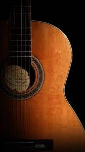
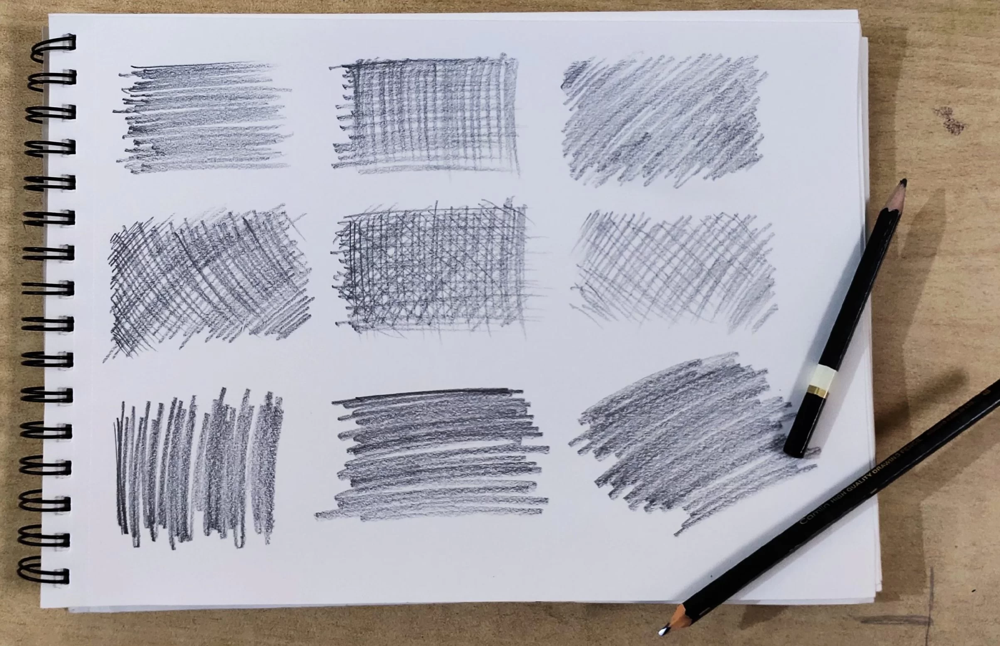

Skills
I possess a diverse range of skills that contribute to my well-rounded profile.
-
Guitar

With proficiency in playing the guitar, I am able to express myself through music and create harmonious melodies.
-
Coding

Additionally, my coding abilities allow me to navigate the digital realm and develop innovative solutions.
-
Sketching

I have a keen eye for sketching, enabling me to bring ideas to life through visual art
-
Video Editing

Video Editing has refined my storytelling abilities.
Together, these skills showcase my passion for creativity, technical prowess, and continuous self-improvement.